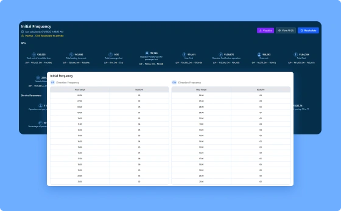
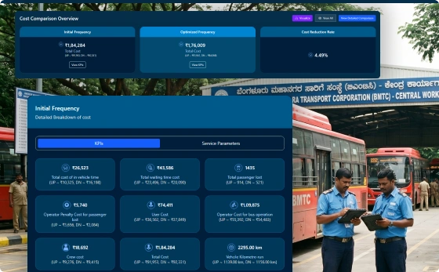
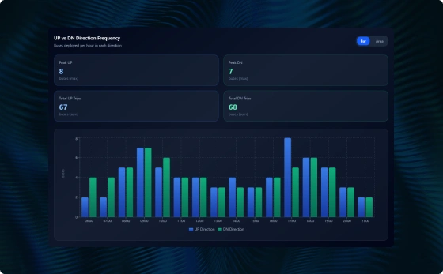

Use data-driven insights to set the right service frequency for every route and time period.

Generate baseline frequency recommendations as a starting point for service design.

Compare service strategies side by side before making operational decisions.

Store and reuse approved service plans whenever they are needed again.
See how PUBBS Transit brings planning, scheduling, dispatch, fleet management, and passenger services together in one connected platform.
Book a Demo